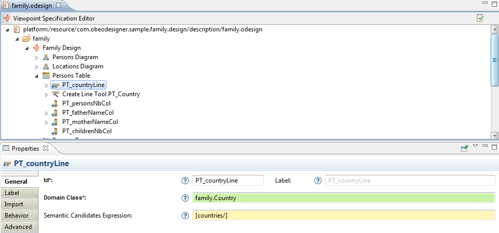

Specifying Table Editors
-
Specifying Table Editors
-
Introduction
-
Edition Tables
-
Table Tools
-
Line Mappings
-
Feature Column Mappings
-
Cross Tables
-
Table Tools
-
Element Column Mappings
-
Intersection Mappings
Introduction
Sirius supports the definition of two kinds of tabular modelers:
-
Edition Tables are classical tables, where each line represents an element and each column (from a fixed set) represents some (potentially computed) property of the element. Lines can contain sub-lines (recursively) to represent sub-elements, and the end-user can expand/collapse these at will. Provided that you specify the corresponding tools, users can create new lines and delete existing ones.
-
Cross Tables are slightly different, optimized to represent relationship between elements in a matrix-like way. Both lines and columns represent elements, and each call at an intersection if a certain relationship exists between them. Cross tables also support sub-lines, but not sub-columns. However provided the right tools are specified, users can create and/or delete columns in addition to lines.
Both kinds of table share a lot of elements. This document will focus on
edition tables, which are the most commonly used. The
section on cross-tables describes them by their differences with edition tables.

 use the icon to access the available fields tooltips:
use the icon to access the available fields tooltips:
-
Id field: The identifier of this element. Must be unique. Changing this identifier will break existing user models which reference the old identifier.
-
Label field: The label used to display this to the end-user.
-
Domain Class field: Type of the element represented by the Node.
-
Semantic Candidates Expression field: Restrict the list of elements to consider before creating the graphical elements. If it is not set, then all semantic models in session will be browsed and any element of the given type validating the precondition expression will cause the creation of a graphical element. If you set this attribute then only the elements returned by the expression evaluation will be considered.
Note: Advanced features like layers, filters and mapping imports which exist for diagrams are not currently available for tables.
Edition Tables
Edition tables are configured by creating an
Edition Table Description element (inside a
Viewpoint) and its sub-elements (which describe the lines, columns and tools).
Edition Table Descriptions are similar to other representation description elements.
The mandatory
Domain Class attribute is the type of semantic element which are represented by the table. In the
Model Explorer, end-users will be able to create new instances of this table on semantic elements of this type (assuming the corresponding viewpoint is enabled in the
Modeling Project). The syntax for the domain class name can be the basic name, like
Class, a qualified name using name of the EMF EPackage which defines the type, like
uml.Class, or a fully qualified URI like
http://www.eclipse.org/uml2/3.0.0/UML#//Class.
By default, new tables can be created on
any instance of the
Domain Class. You can use the
Precondition Expression (available in the
Advanced category) to change this. If such an expression is specified, it will be evaluated in the context of the semantic element the user has selected, and only if the expression returns
true will the user be able to create a new table on this element.
The default title for newly created table can be specified using the
Title expression (
Advanced category), which is evaluated in the context of the semantic element on which the table is created, and should return a string. If the expression is not specified, the default title is the label of the table description (of its
Id if no
Label is set) prefixed with the string
"new " (e.g.
new Package Contents).
It is recommended that the
Edition Table Description be explicitly associated with the meta-model(s) of the semantic elements it will represent. You can add referenced meta-models from different sources in the
Metamodels property section of the
Edition Table Description. Sirius will work even without this association, but setting it explicitly will give you better feedback when validating your
VSM
.
The
Initialization and
Show on startup flags control whether table instances are created and/or opened automatically without user intervention. If
Initialization is set, then when the viewpoint which contains this table description is enabled, instances of this table description will be automatically created on all compatible semantic elements. If
Show on startup in set, then when a modeling project is opened which contains instances of this table description, they will be opened: if only one such representation exist, it will be opened automatically; is there are more than one, a dialog box will appear to allow the user to select which one(s) to open.
Finally, the
Initial Header Column Width (
Advanced category) is specific to table descriptions (both edition tables and cross tables). It can be used to specify the default size (in pixels) of the left-most column of the table, which contains the labels of the elements represented by each line. If the value if 0 (the default), the column width will be computed from the initial content when the table is created.
Some tools which apply to the whole table are specified directly inside the
Edition Table Description:
-
Representation Creation Tools: These tools (one for each kind of representation supported by Sirius) can be used to create (and open) a new representation from an existing table element. It will be available to end-users in the
Navigate context menu on compatible table elements. To configure the tool, simply select in the
Mappings property which kinds of lines the tool should appear on (you can be more precise using the
Precondition expression if necessary), and select the kind of representation which should be created using the
Representation Description property (in practice, one of
Diagram Description,
Table Description or
Tree Description depending on the tool). Normally, the new representation will be created on the semantic element represented by the tree item on which the user invoked the tool. Sometimes you want the tool to appear on one element, but create a representation on another one. In this case, use the
Browse expression (in the
Advanced category) to navigate from the element selected to the one one which the new representation should actually be created. Finally, any operation you specify in the body of the tool will be executed when the tool is invoked; you can use it to initialize the content of the model represented.
-
Representation Navigation Tools: These tools (one for each kind of representation supported by Sirius) are very similar to the previous ones. The only differences is that they allow users to navigate to existing representation instead of creating new ones. If such a tool exists, the
Navigate context menu on an element will contains an entry for each corresponding representation which already exists on the element selected (or reachable from the selected element using the
Browse expression). You can specify a
Navigation name expression (
Advanced category) to be used in the menu entry instead of using the title of the existing representation. This can be useful to make it more explicit what the relationship is between the current element and the target tree.
-
Line Creation Tools which are directly contained inside the
Table Description are used to create root table lines. They are available to end-users through a combo button in the main Eclipse tool-bar. To configure it, simply select the kind of line the tool will create in the
Mapping property, and specify the tool’s behavior using normal model operations.
Refer to Tools specification
Line Mappings
The lines which will appear in a table (and their organization in sub-lines) are defined by the
Line mapping elements inside the
Table Description element. A
Table Description contains
Line mappings which define which elements will appear as top-level lines of the table, while each
Line mapping can contain sub-mappings which define its own direct sub-lines. If an element (the table or a line mapping) contains several sub-mappings, the element’s content will appear in the order of the mappings: first all the instances of the first mapping, then the instances of the second one, etc.
A
Line mapping is defined by a
Domain Class and a
Semantic Candidates Expression. The
Semantic Candidates Expression indicates where to look in the semantic model for elements which should be represented by the mapping. The expression is evaluated in the context of the parent’s semantic element (the parent being either the table itself or a parent line). It should return a set of semantic elements. Only those which are instances of the specified
Domain Class are retained and actually represented as instances of this mapping. The semantic element thus associated to each line is called the line’s
target element.
You can associate more semantic elements to a line by defining the
Associated Elements Expression (in the
Advanced Category), which is evaluated in the context of the target and may return more semantic elements. Any change in the target element or one of the associated elements will automatically trigger a refresh of the line.
The
Header Label Expression (in the
Label category) is evaluated in the context of a line’s target and should return the text to be shown for the line in the header column (on the left of the table).
A
Line mapping may
Reuse Sub Lines (see the
Import category), including itself, as sub-mappings. The effect is exactly the same as if the reused mapping(s) were created as children if the parent. However because a mapping can reuse itself or one of its parent mapping, this allows to create table of infinite depth (or at least not bounded a priori). The
Reused in Mappings property is the symmetrical of
Reused Sub Lines: it shows you which line mappings reuse this one as a sub-line.
Line Style
You can create
Style elements inside a line mapping to set the default style of all the cells on this line (note that the actual style can be overridden by the column mappings).
A
Foreground Style element can be used to set the font size, font style (e.g. italic) and text color. A
Background Style can be used to set the background color. Both are optional.
You can also specify
Conditional styles for the foreground. Each one is a normal foreground style wrapped in a predicate expression (evaluated in the context of the line’s semantic element). If conditional styles are specified, their conditions are tested in order, and the first one which matches is used. If no conditional style is defined, the
Foreground Style (or the default) is applied.
There are two kinds of tools which can be created inside line mappings (and apply to all instances of that mapping).
-
Create Line Tool are used to create a new lines. A mapping can contain several such tools. They appear in the context menu of the instances of the mapping, if the (optional)
Precondition of the tool holds for the instance’s target. A creation tool must specify what kind of
Mapping it will create. The actual behavior of the creation tool is defined in the tool’s body, using all the standard model operations.
-
Delete Line Tool, used to delete elements. If a line mapping does not define explicitly a deletion tool, the default behavior of the
Delete line operation is to remove the line’s semantic
target and all
associated elements from the semantic model. If you want a specific behavior, you must create a
Delete Line Tool explicitly and describe the behavior in the tool’s body. If you want to prevent the deletion of an element, you must create a
Delete Line Tool and set a
Precondition to return
false for the elements which should not be deleted.
Feature Column Mappings
The columns which will appear in an edition table are defined by the
Feature Column mapping elements inside the
Table Description element. They are named
Feature Column mappings because they normally represent a property (maybe computed) of the elements which are represented by the table’s lines, and also to distinguish them from the kind of columns which appear in
cross tables.
A
Feature Column mapping is defined by its
Feature Name, which should normally be the name of a valid feature (attribute or reference) of the element which appear in the tables' lines. If a line represents a semantic element
S1 but you want on some column to show a property of an element reachable from
S1 instead of
S1 itself, you can use the
Feature Parent Expression (
Advanced category), which is evaluated in the context of
S1 and should return an element
S2.
S2 will be considered the
target element of the cell at this intersection instead of
S1.
You can associate more semantic elements to the mapping using the
Associated elements expression in the
Advanced category. The expression will be evaluated in the context of the target semantic element of the cell.
The
Label Expression is used to compute the text to show in each cell. It is evaluated for each cell in the context of its target semantic element. If you compute text for elements whose EClass have no common EStructuralFeatures (inherited or with same name), you can use
* as
Feature Name to skip the feature name validation during the cell creation.
In tables, the contents of the cell is editable by default. Even with no direct edit tool specified, Sirius will try to interpret the text entered by the user according to the type of the feature the column represents (as defined by the
Feature Name. For example if a column represents a boolean attribute, Sirius will correctly interpret the strings
"true" and
"false" and set the value accordingly when the user edits a cell. You can disable this behavior by giving a
Can Edit expression, which is evaluated in the context of the semantic element of each individual cell. It should return
false if that cell should not be editable.
Finally, the
Header Label Expression is used to compute the header of the column itself, and is evaluated in the context of the table’s target semantic element, and the
Initial width, if set to a non-zero value, is used as the initial width of the column.
Column Styles
Columns can contain style definition which, if present, override the styles which may be present in the line mappings for the cells of this column. The style definition elements, including support for conditional styles, is the same as for style associated to line mappings. Refer to
the corresponding section for more details.
Column can currently only define a
Label edit tool, which will apply to all the cells of the column. It works like all edit The
Edit Mask element (contained inside the tool) is used to parse the new label’s value as entered by the user, and to select part of this label as input variables to the editing action’s body. The mask can contain substrings of the form
{N} where
N is a number. The parts of the new label’s value which correspond to these substring will be available as variables named argN. For example, with an edit mask of {0}:{1} and an input string entered by the user of attr : EString, the tool’s body would be executed with variables arg0 set to attr␣ and arg1 set to ␣EString.
Cross Tables
Cross Tables are slightly different from edition tables. They are optimized to represent relationship between elements in a matrix-like way. Both lines and columns represent elements, and each call at an intersection if a certain relationship exists between them. Cross tables also support sub-lines, but not sub-columns. However provided the right tools are specified, users can create and/or delete columns in addition to lines.
Cross tables are specified using a
Cross Table Description element, which works exactly like
Edition Table Description
elements. The differences appear in the type of elements they can contain.
Cross tables can contain the same kinds of tools as edition tables (see
the corresponding section for details). In addition, they can contain
Create Column Tools, which behave exactly like
Create Line tools, except that they apply to
Element Column mappings
(see below) and are used to create new columns in the table.
Refer to Tools specification
Element Column Mappings
In cross tables, columns represent elements instead of elements' properties (as is the case for edition tables). The set of columns is defined by one or more
Element Column mappings. They are almost identical to
line mappings, except that:
- they can not be nested (there are no “sub-columns” like there are sub-lines), and thus can not “reuse” column mappings either;
- they can have an
Initial width (set in the
Advanced category).
Element Column mappings can contain a
Create Column Tool and a
Delete Column Tool, which are specified and behave in a similar way than the
Create Line and
Delete Line
tools for line mappings.
They can also contain style definitions (including conditional style), which apply to all the cells in the column (unless overridden by the intersection mapping). For a given cell, the styles defined on the column mapping overrides the styles which are defined on the line mapping (if any).
Intersection Mappings
The line and element column mappings in a cross table define which lines and columns will be present in the tables, but not the contents of the cells. This is defined by
Intersection mappings. The
Line Mapping and
Column Mapping properties indicate which cells the mapping describes. The
Label Expression, evaluated in the context of the cell’s targets semantic element, should return the text to show in the cell, while the
Can Edit expression indicates whether or not the cell’s value can be edited by end-users.
There are two slightly different use cases for intersection mapping, which use different sub-sets of the remaining properties:
- Intersections which represent a relation between the element on a line and the element on a column. For example, if both lines and columns represented UML classes, this could be the “super-class” reference between a class and those it inherits from;
- Intersections which represent a semantic element (instead of just a relation) which is itself related to both the element on the line and the element on a column. To continue with the UML example, this would be used to represent UML Associations, which are full-blown objects representing a relationship between classes.
If you are familiar with it, this is similar to
Relation Based Edges and
Element Based Edges in Sirius diagrams.
In the first case (“relation-based intersection”), the semantic element of a cell will the the semantic element of the cell’s line. To configure such an intersection, you must only set the
Column Finder Expression: from a line’s semantic target element, it should return the semantic element of the column in which the cell should appear.
The second use case (“element-based intersection”) is enabled by setting the
Use Domain Class flag in the
Domain Based category. You must then indicate the
Domain Class of the elements which will be represented by the cells, and the
Semantic Candidates Expression. The expression will be evaluated in the context of the whole table’s semantic element, and should return all elements (instances of the
Domain Class) which should be represented by cells. These elements will be the semantic target element of the cell. You can use the
Precondition Expression and
Associated elements expression (
Advanced category) with the same semantics as for other mappings. Finally, you must set both the
Column Finder Expression (
General category) and the
Line Finder Expression (
Domain Based category): they will both be evaluated in the context of the cell’s semantic element, and should return the semantic elements of the column and line at which the intersection should appear. In our example, these would be expressions which, from the
Association element, find the source and target classes of the association.
Intersection Style
An
Intersection mapping can contain style elements, including conditional styles. If they are present, they override any style set on the corresponding column mapping or line mapping.
Intersection mappings can contain two kinds of tools:
-
Label Edit tools are standard “direct edit” tools, which allow end-users to edit a cell’s label. You can specify the actual changes in the model in the tool’s body.
-
Create Cell Tools are used when the user edits an initially empty cell, where there is no relation (or element relating) the line and column. It is defined like a
Label Edit tool (with an
Edit Mask Variable to obtain the text entered by the user), but instead of editing an existing relation, it should create a relation (e.g. add the class in the column as a super-class to the one on the line) or the element relating the line and column (e.g. create an
Association which links the classes).